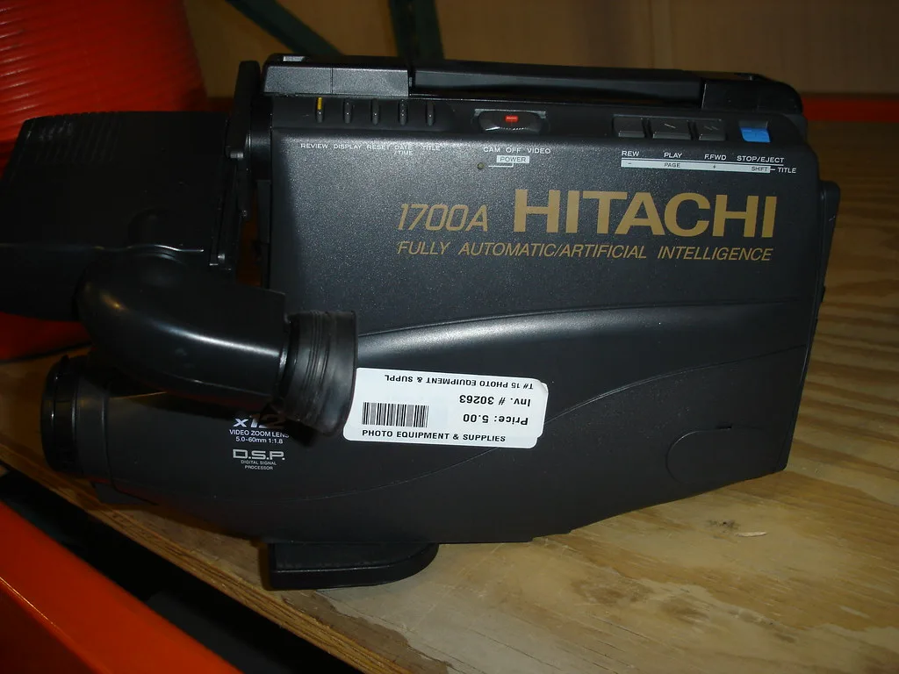

'1조 대어' 엘리스, 상장 이틀째 상한가…전날 32% 폭락서 반전
인공지능(AI) 인프라 기업 엘리스가 코스닥 상장 이틀째인 21일 개장 10분 만에 상한가로 직행했다. 오전 9시22분 현재 엘리스는 전 거래일 대비 1만8400원(29.92%) 오른 7만9900원에 거래되며 가격제한폭까지 치솟았다. 상장 첫날 급락세를 딛고 단 하루 만에 극적인 반전을 이뤄낸 셈이어서, 투자자들 사이에서는 '이상한 증시'라는 반응까지 나왔다.
엘리스는 전날인 20일 코스닥 시장에 데뷔했지만 분위기는 좋지 않았다. 공모가 9만500원보다 32.04% 낮은 6만1500원에 거래를 마치며 '1조 대어'라는 수식어에 걸맞지 않은 급락으로 첫날을 마감한 것이다. 엘리스는 AI 모델 개발과 배포를 지원하는 인프라 기업으로, 올해 상반기 매출이 전년 동기 대비 3배 늘어나는 등 외형 성장세를 보여왔다. 공모주 청약 당시에도 약 10조원에 이르는 청약증거금이 몰리며 흥행에 성공했던 터라, 상장 첫날의 급락은 시장의 예상을 벗어난 결과였다.

수급을 들여다보면 투자자별 움직임도 엇갈렸다. 상장 첫날 개인투자자는 엘리스 주식 463억4200만원어치를 순매수하며 저가 매수에 나섰지만, 외국인과 기관은 각각 90억4600만원, 353억6400만원어치를 순매도했다. 기관을 중심으로 한 매도 물량이 주가를 끌어내린 주된 요인으로 꼽힌다.
엘리스의 상장 첫날 급락은 국내 투자자뿐 아니라 해외에서도 주목을 받았다. 주요 외신은 엘리스의 급락 소식을 집중적으로 조명하며 글로벌 AI 인프라 기업들의 높은 기업가치와 막대한 투자 부담을 둘러싼 논란이 커지고 있다고 진단했다. 일부 외신은 이 소식이 뉴욕증시 기술주 투자심리에도 영향을 미쳤다고 분석하기도 했다. 국내 증시의 한 상장 종목이 미국 증시 투자자들의 시선까지 끌었다는 점에서, AI 밸류에이션을 둘러싼 경계감이 국경을 넘어 확산하고 있음을 보여준 사례로도 거론됐다.

하지만 하루 만에 분위기는 급반전했다. 스페이스X 등 주요 AI 관련 기업들이 잇따라 호실적을 발표한 데다, 미국과 이란 간 협상 기대감이 번지면서 국내외 지표가 개선된 영향으로 위험자산에 대한 투자심리가 살아난 것으로 풀이된다. 전날 과도하게 밀렸다는 인식 속에 저가 매수세가 몰리면서 상한가까지 이어졌다는 분석도 나온다.
엘리스의 상장 첫날 폭락과 이틀째 상한가라는 극단적인 변동성은, 최근 국내외 증시 전반에서 반복되고 있는 AI 버블 논란의 한 단면으로도 읽힌다. 국내 증시 역시 이달 중순 이후 반도체 대형주를 중심으로 급등과 급락을 거듭하며 비슷한 흐름을 보여왔다. AI 산업에 대한 기대와 밸류에이션 부담이 동시에 반영되며 변동성이 커지는 모양새다.
다만 엘리스 주가는 이날 상한가를 기록했음에도 여전히 공모가 수준을 밑돌고 있다. 증권가에서는 이번 급락과 반등이 AI 인프라 기업에 대한 성장성 기대와 고평가 우려가 동시에 반영된 결과라며, 향후 실적과 시장 상황에 따라 주가 변동성이 한동안 이어질 수 있다고 내다봤다. 매출이 가파르게 늘고 있다는 점만으로는 막대한 투자 비용과 높은 기업가치에 대한 투자자들의 의구심을 잠재우기 쉽지 않다는 지적도 함께 나온다.